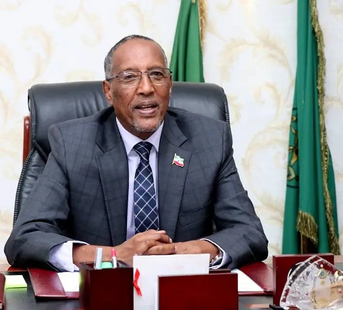
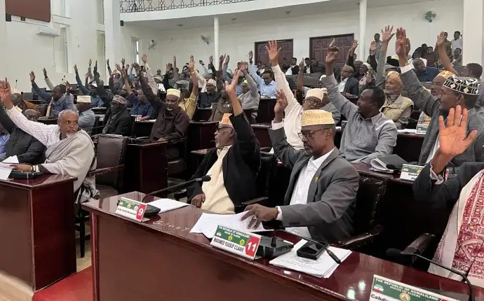
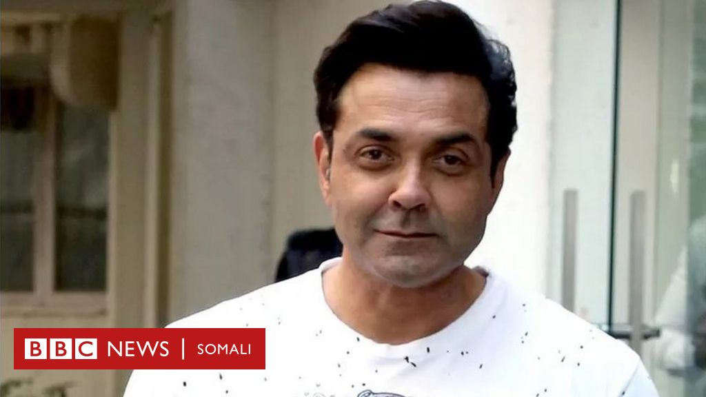
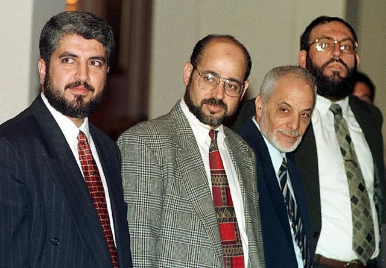
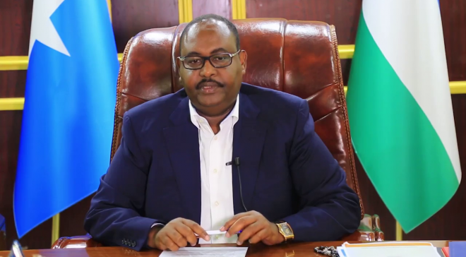
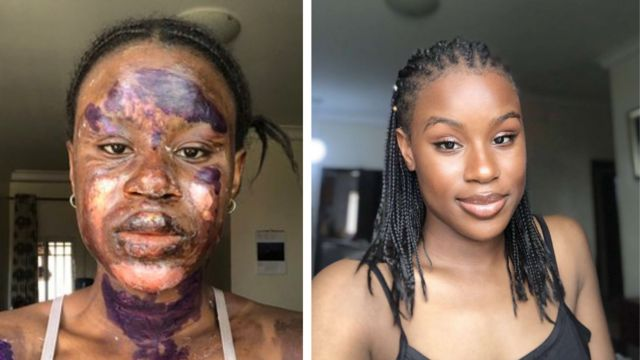

madaxweynah jamriyad somaliland: muse bixi cabdi ayaa wax uu ah siyasi reer somaliland ah
Muuse Biixi Cabdi waa siyaasi reer Somaliland ah, horayna u soo noqday sarkaal ka tirsan ciidamada milateriga, waxaana uu madaxweyne ka ahaa Somaliland tan iyo bishii December 2017. 1970-meeyadii, waxa uu duuliye ka noqday ciidankii hawada Soomaaliya ee maamulkii Siyaad Barre. 2010, Biixi waxa loo magacaabay guddoomiyaha xisbiga talada haya ee Kulmiye ee Jamhuuriyadda Somaliland.
7 Saacadood ka hor
Muxuu horey uga yiri xalad so food saray somaliland iyo xaladah kala duwan ee kuso wajahan ? "
musharax madaxweyne ee xisbiga wadani c/raxman Abdullahi ciro aya sanadka u tagan madaxweyn

War Deg Deg ah:- Somaliland Oo Sanadkan Doorasho u Dareeraysa Sida Ay Ansixiyeen Golaha Guurtida Somaliland Fadhigii Maanta Oo Isniin ah?
jamacad gollis faraceeda magalad ceerigabo ay qadanay sanadka arday cusub

5 ka mid madaxda hay'adaha sirdoonka ugu awoodda badan iyo qaabka lagu soo xulay

Atoore Bobby Deol: 'Carruurtayda ayaa I waydiinaysay,' Aabbe, maxaad guriga u joogtaa? '

Dikumintiyo sir ah oo kashifay “xaqiiqada” xiriir ka dhaxeeya Xamaas iyo Israa’iil

Doorashada Soomaaliya: Afar caqabad oo Deni sugaya marka uu ku noqdo Puntland
